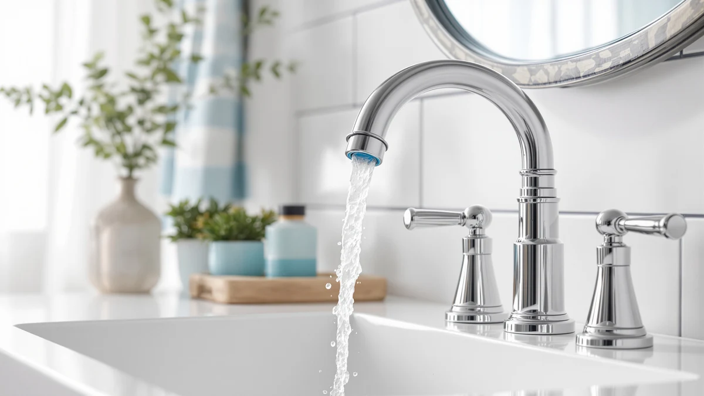

The Best Vanity Faucets Under $200 (2026)
Prices and picks verified as of August 2026. Independent, reader-supported reviews.


Quick Answer
The Aqua Vista 30-B410-AV Single Handle is the best vanity faucet under $200 for most bathrooms, pairing a brass body with a single-lever design and a 4-star owner rating at $35.40. If your vanity has three pre-drilled holes, the $170 Moen TV6620 Brantford brings a recognized brand name to the same budget ceiling.
Our pick: Aqua Vista 30-B410-AV Single Handle, $35.40 Check Price on Amazon
Bottom line: our top pick is the Aqua Vista 30-B410-AV Single Handle Bathroom Faucet at $35.40. The best budget option is the LUFG Bathroom Faucet Single Handle Bathroom Sink Faucet at $28.78.
Things to Know Before You Buy
- Hole spacing decides fit. A single-handle or centerset faucet needs one to four inches of vanity holes, while a widespread model like the Moen TV6620 needs three holes set 8 inches apart. Check your sink before buying any vanity faucet under $200.
- Brass holds up better than zinc. All four faucets in this guide use a brass body, which resists corrosion at the threads far longer than the zinc-alloy units common at the low end of the market.
- A recognizable brand can justify the price. The $170 Moen Brantford costs nearly six times as much as the $28.78 LUFG, and that gap buys a known brand name and a widespread design rather than a different core material.
- Finish affects daily upkeep. A nickel finish, like the one on the RNDIOZD Centerset, shows fewer water spots than polished chrome and needs less wiping.
- Owner ratings matter more than price alone. Every faucet here holds a 4-star owner rating, so within this budget, installation type and finish should guide your choice more than price.
The best vanity faucets under $200 give you room to choose a recognized brand or a widespread design without pushing your budget into premium territory. We compared four models that sit well under that ceiling, from a $28.78 single-handle faucet to a $170 widespread set from Moen, and all four carry a 4-star owner rating. Each uses a brass body rather than the lighter zinc alloy that tends to corrode at the threads within a year or two.
Our pick is the Aqua Vista 30-B410-AV Single Handle. At $35.40 it costs a fraction of the $200 ceiling, and its single-lever design fits the widest range of vanities, since it needs only one mounting hole. Owners report reliable operation at that price, and the brass construction should outlast the zinc units that crowd the budget end of the faucet market.
If you have a three-hole vanity and want brand recognition behind the purchase, the Moen TV6620 Brantford is worth the jump to $170. For tighter budgets, the LUFG Single Handle and the RNDIOZD Nickel Centerset both stay under $30 while keeping the same brass build. Below, we break down what each of these vanity faucets under $200 does well and where it falls short.
Why You Should Trust Us
Ilane Tall covers bathroom hardware for Best Bathroom Faucets and built this guide by comparing specs, pricing, and verified owner reviews rather than marketing copy. We did not accept free samples from any of the brands listed, so nothing here reflects a sponsorship relationship. To evaluate these vanity faucets under $200, we cross-checked each listed price and rating against current Amazon data and read through verified buyer feedback for recurring complaints about leaks, loose handles, or finish wear. When reviewers flagged a problem, we say so in the pros and cons below.
How We Picked
We started with vanity faucets priced under $200 that use a brass body rather than a zinc-alloy one, since brass resists corrosion at the valve and threads far longer. From there we compared installation type: single-handle and centerset models that fit most standard vanities, plus one widespread option for three-hole sinks. We also weighed brand reputation, since Moen backs its faucets with a broader service and warranty network than lesser-known manufacturers. Every model that made this list of the best vanity faucets under $200 holds a 4-star owner rating, and we ruled out anything with a pattern of leak or finish complaints in verified reviews.
How We Compared
We compared these vanity faucets under $200 on published specs, current Amazon pricing, and the material each manufacturer lists for the body and finish. We read through verified owner reviews for each model, looking for recurring mentions of leaks, loose handles, or finish wear rather than one-off complaints. We also checked hole spacing and mounting type against standard vanity configurations, since a widespread faucet like the Moen TV6620 will not fit a sink drilled for a single-handle model. We do not run a physical testing lab, and we did not install or use these faucets ourselves. Our comparisons rely on manufacturer data and verified buyer feedback, not hands-on trials.
Our Picks

Aqua Vista 30-B410-AV Single Handle
What we like
- Brass construction well under the $200 ceiling
- Single-lever handle simplifies temperature control
- Fits standard single-hole and centerset vanities
- 4-star owner rating at this price
Flaws but not dealbreakers
- No widespread option for vanities with three holes
- Fewer finish choices than the pricier Moen
| Material | Brass + finish |
| Size | (Pack of 1) |
The Aqua Vista 30-B410-AV Single Handle is our pick among vanity faucets under $200 for one simple reason: it delivers a brass body and a working single-lever design for $35.40, a fraction of the budget most shoppers set aside for a bathroom faucet. The single-handle layout means it needs only one mounting hole, so it fits the widest range of vanities without any drilling or adapter plate. Owners report smooth operation and a solid feel at this price, and the brass construction should hold up better over time than the zinc-alloy faucets that dominate the sub-$30 market. It carries a 4-star owner rating, in line with every other pick in this guide.
Where the Aqua Vista gives ground is styling variety. It comes in one finish and one configuration, so if your vanity has three pre-drilled holes for a widespread faucet, this model will not fit without swapping the sink hardware. It also skips the brand recognition that a name like Moen carries, which matters if a longer warranty network is a priority. For a straightforward single-hole vanity, though, it is hard to beat as one of the best vanity faucets under $200, since it covers the essentials at less than a fifth of the price ceiling.

Moen TV6620 Brantford Widespread Bath
What we like
- Backed by a recognized, established brand
- Widespread design suits three-hole vanities
- Brantford styling matches Moen's broader bath collection
- 4-star owner rating
Flaws but not dealbreakers
- Costs nearly six times the cheapest pick in this guide
- Needs three pre-drilled holes set 8 inches apart
| Material | Brass + finish |
| Size | — |
The Moen TV6620 Brantford Widespread Bath faucet is the pick for a vanity with three pre-drilled holes spaced 8 inches apart, and at $170 it uses most of the $200 budget to bring a widely recognized brand name into the bathroom. Moen backs its faucets with an established service and warranty network that smaller manufacturers cannot match, which carries weight if something needs replacing down the line. The Brantford line pairs a traditional silhouette with separate hot and cold handles, giving finer temperature control than a single-lever design. It holds a 4-star owner rating, matching the rest of the picks in this guide despite its higher price.
The tradeoff is straightforward: this faucet costs nearly six times as much as our budget pick, and that premium buys brand recognition and a widespread layout rather than a fundamentally different core material, since it still uses the same brass-and-finish construction as the cheaper options here. It also will not work on a vanity drilled for a single-handle or centerset faucet, so measure your holes before ordering. For shoppers who specifically want a name-brand widespread faucet and have the holes to support it, the Moen TV6620 remains one of the more dependable vanity faucets under $200, though not the most budget-friendly one.

LUFG Bathroom Faucet Single Handle
What we like
- One of the least expensive brass picks under $200
- Single-handle design works on compact vanities
- 4-star owner rating despite the low price
Flaws but not dealbreakers
- Lacks the brand recognition of Moen
- Basic styling with no widespread option
| Material | Brass + finish |
| Size | — |
The LUFG Bathroom Faucet Single Handle is the pick for shoppers who want to spend as little as possible while still avoiding the corrosion problems that come with cheap zinc faucets. At $28.78, it undercuts nearly every other option in this guide, yet it still uses a brass body and holds a 4-star owner rating. Like the Aqua Vista, its single-handle design needs only one mounting hole, which makes it a workable swap for most standard vanities without any additional drilling. Reviewers consistently note straightforward installation and steady water flow at this price, which is not a given among the least expensive faucets on the market.
What you give up at this price is brand recognition and finish variety. LUFG does not carry the name recognition or service network of a brand like Moen, and this model comes in a single configuration with no widespread option for three-hole vanities. There is also less headroom if something goes wrong, since a lesser-known brand typically offers a shorter or less accessible warranty. Still, for a secondary bathroom, a rental, or any vanity where budget matters more than brand, the LUFG is one of the more sensible vanity faucets under $200 you can buy, precisely because it does not ask you to spend close to that ceiling.

RNDIOZD Nickel 4 Inch Centerset
What we like
- Lowest price in this guide at $29.99
- Nickel finish resists water spots between cleanings
- Centerset design suits smaller vanities
- 4-star owner rating
Flaws but not dealbreakers
- Centerset only, won't fit an 8-inch widespread vanity
- No premium brand backing like the Moen
| Material | Brass + finish |
| Size | — |
The RNDIOZD Nickel 4 Inch Centerset is the budget pick in this guide at $29.99, and it earns that spot by pairing a brass body with a nickel finish that resists water spots better than the polished chrome common at this price. Its 4-inch centerset design fits compact vanities and single-hole sinks where a widespread faucet like the Moen would not work. It holds the same 4-star owner rating as every other pick here, which suggests the low price has not come at the cost of reliability.
The centerset format is both the appeal and the limit. It fits small bathrooms and secondary sinks well, but it cannot span an 8-inch widespread vanity, so measure your existing holes before ordering. It also does not carry the brand backing of the Moen Brantford, though at less than a fifth of that faucet's price, most buyers are not expecting that kind of support. For a compact vanity on a tight budget, the RNDIOZD remains one of the most practical vanity faucets under $200 we compared, and the nickel finish helps it look sharper than its price suggests.
Quick Comparison
| Product | Material | Price | Rating | Best for | Get it |
|---|---|---|---|---|---|
| Aqua Vista 30-B410-AV Single Handle | Brass + finish | $35.40 | 4 | Most vanities | View on Amazon → |
| Moen TV6620 Brantford Widespread Bath | Brass + finish | $170.00 | 4 | Three-hole vanities | View on Amazon → |
| LUFG Bathroom Faucet Single Handle | Brass + finish | $28.78 | 4 | Tightest budgets | View on Amazon → |
| RNDIOZD Nickel 4 Inch Centerset | Brass + finish | $29.99 | 4 | Compact sinks | View on Amazon → |
What is the difference between a single-handle, centerset, and widespread vanity faucet?
A single-handle faucet uses one lever for both temperature and flow and needs a single mounting hole, like the Aqua Vista or LUFG in this guide.
Is it worth paying $170 for a vanity faucet instead of $30?
It depends on what you value.
The Competition
We looked at a wider range of vanity faucets under $200 before narrowing the list to these four. Several similarly priced widespread faucets from lesser-known brands carried a pattern of leak complaints at the base in verified reviews, which ruled them out despite competitive pricing. A handful of centerset options undercut the RNDIOZD on price but used a lighter zinc-alloy body rather than brass, the same shortcut that tends to cause corrosion at the threads within a year or two.
We also passed on a few faucets priced closer to the $200 ceiling that offered little beyond a Moen-style widespread layout at a markup, without the brand backing or documented warranty support that makes the Brantford worth its price. On the low end, several sub-$25 single-handle models had reviews flagging wobbly handles and thin, easily marred finishes, issues that neither the LUFG nor the Aqua Vista showed in owner feedback.
Among vanity faucets under $200, the products that made this list share two traits the rejected ones lacked: a brass body and a consistent 4-star owner rating. Everything else comes down to installation type and how much brand name you want to pay for.
Frequently Asked Questions
What is the difference between a single-handle, centerset, and widespread vanity faucet?
A single-handle faucet uses one lever for both temperature and flow and needs a single mounting hole, like the Aqua Vista or LUFG in this guide. A centerset faucet, such as the RNDIOZD, combines the spout and two handles on one base spanning about 4 inches. A widespread faucet, like the Moen TV6620 Brantford, splits the spout and handles into three separate pieces set 8 inches apart, which requires three holes in the vanity.
Is it worth paying $170 for a vanity faucet instead of $30?
It depends on what you value. The $170 Moen TV6620 buys a recognized brand name, an established warranty network, and a widespread design, not a fundamentally different core material, since every pick in this guide uses a brass body. If your vanity has a single hole and budget matters more than brand, the $28.78 LUFG or $35.40 Aqua Vista cover the same basic job for a fraction of the price.
Which vanity faucet under $200 should I buy?
For most bathrooms, buy the Aqua Vista 30-B410-AV Single Handle at $35.40. It is the best vanity faucet under $200 we compared for a standard single-hole vanity, with a brass body and a 4-star owner rating. If your vanity has three holes and you want brand recognition, spend up to $170 on the Moen TV6620 Brantford instead.